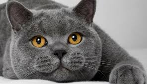
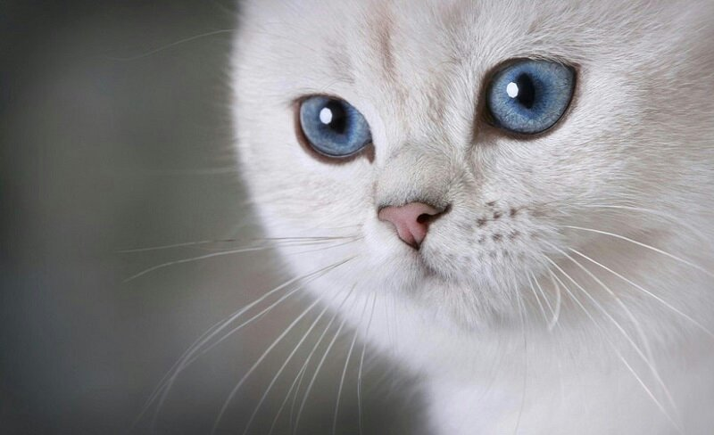

British Shorthair

One of the most popular cat breeds in the world, the British shorthair is appropriately named. Not only do they have a thick, plush short coat, they also have a friendly yet no-nonsense—that is, rather British—sensibility about life. British shorthairs make ideal family cats and enjoy being with their owners, but may turn up their noses at being held or cuddled too much. This beautiful breed comes in a wide variety of colors and patterns, but the traditional British shorthair is wrapped in blue fur. The best part: This medium-to-large-sized cat has few health problems.
Appearance
Besides being treasured for their easygoing attitude about life, British shorthairs are beloved for their thick, dense coats that come in almost any color or pattern. Blue-gray cats , often called British blues, are probably the most popular color choice of British shorthair fanciers.
Temperament
When it comes to temperament, British shorthairs are hard to beat: They're active without being boisterous, they're affectionate without being cloying, and they're smart but don't feel the need to show off by figuring out how to open your refrigerator. British shorthair cats are easygoing and will treat everyone in the family (including dogs and other cats) like a good friend, especially if socialized as kittens.
Fun Facts
- British shorthairs have a special place in literature, too. Probably the most famous British shorthair is the Cheshire Cat in Alice's Adventures in Wonderland. No one really knows exactly where Lewis Carroll got his inspiration for the Cheshire Cat's smiling countenance—some believe it was from an illustration on a label of Cheshire Cheese; others believe he was inspired by a church sculpture. But whatever it was, the Cheshire Cat looks a lot like a contented British shorthair.
- With his chubby cheeks and big green eyes, Puss in Boots is generally considered to be a British shorthair (despite his Spanish accent).
- Coby the Cat is a British shorthair with more than 1.5 million Instagram followers.
- More facts can be found on the website https://www.mentalfloss.com